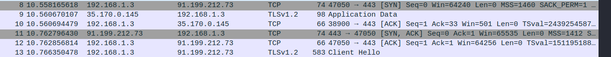

SCANNING TOOLS
Pre-requisites:TCP (transmission control protocol)
• Connection-oriented
• Handshake ✔
• Used on applications requiring high reliability
• Ex: HTTP,FTP,Telnet
[SYN],[SYN,ACK],[ACK]..CLIENT HELLO

UDP (user datagram protocol)
• Connectionless
• No handshake
• Used on applications requiring fast connection
• Ex: DNS,DHCP,SNMP
wireshark
nmap
nmap -sn 192.168.1.0/24 : portscanner
nmap -T4 192.168.1.1 : scan with speed of -T4(0-5)
nmap -T4 -A -p- 192.168.1.1 :scan ,tells os,version,script scanning,traceroute..-p- means all ports
nmap -sU -T4 192.168.1.1 :unreliable,tal=kes long..udp
/usr/share/nmap/scripts/scripts : nmap scripts | vuln scanning
nessus
/etc/init.d/nessusd start
metasploit
msfconsole
search portscan
use auxiliary/scanner/portscan/syn
info
options
webscanners
nikto
nikto -h webname
burpsite ☒